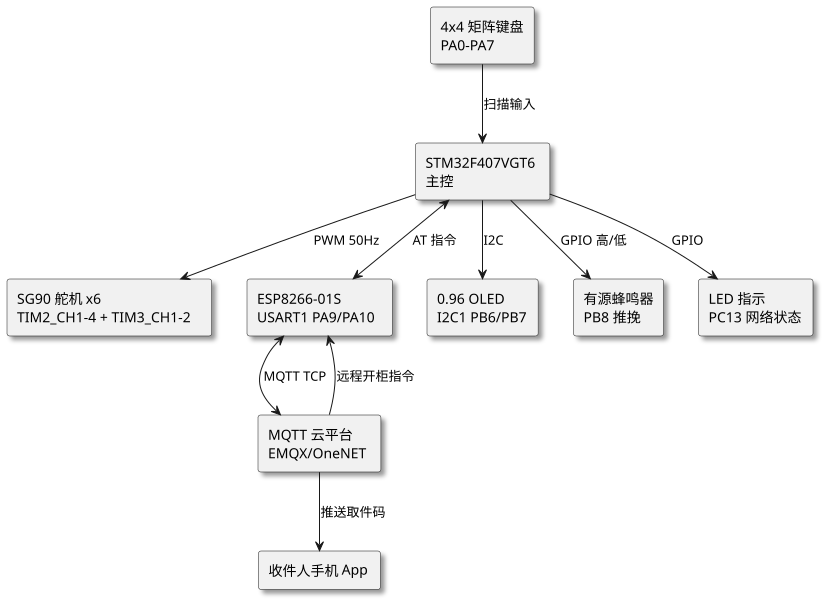
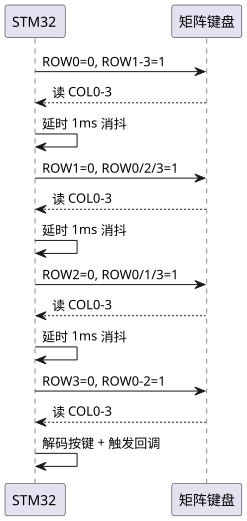
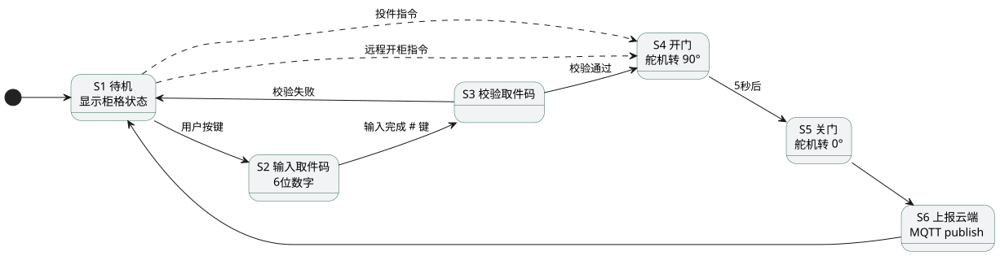

第 43 章 智能快递柜（STM32+矩阵键盘+舵机+ESP8266）
学习目标
- 掌握基于 STM32F407VGT6 的智慧物流场景项目需求分析方法与系统架构设计
- 理解 4×4 矩阵键盘扫描原理与舵机 PWM 多通道分时复用控制技术
- 学会使用 ESP8266 AT 指令实现 MQTT 协议接入物联网云平台
- 掌握有限状态机（FSM）思想在多业务流程（取件/投件/远程开柜）中的应用
- 能独立完成智能快递柜的硬件选型、接线、程序编写、调试与扩展
§43.1 项目需求分析
§43.1.1 行业背景与功能需求
§43.1.1.1 行业背景
随着电子商务与智慧物流的高速发展，末端配送"最后 100 米"成为制约配送效率的关键瓶颈。智能快递柜作为无人化自助取件终端，可 24 小时服务，有效解决快递员反复投递、收件人不在家等问题。本项目基于 STM32F407VGT6 主控 + 4×4 矩阵键盘 + 6 路 SG90 舵机 + ESP8266 联网模块，模拟一套 6 格柜的智能快递柜控制系统，覆盖取件、投件、远程管理三大业务流程。
§43.1.1.2 功能需求清单
具体功能需求如下：
- 取件流程：用户在矩阵键盘输入 6 位取件码 → 系统校验有效性 → 对应柜门舵机转动 90° 开门 → 用户取走包裹 → 5 秒后舵机自动回 0° 关门 → 上报"已取件"状态到云平台。
- 投件流程：投递员刷卡或扫码 → 系统查询空柜并分配 → 舵机开门 → 投放包裹关门 → 系统生成 6 位取件码 → 通过 ESP8266 MQTT 推送到收件人手机。
- 远程管理：云平台通过 MQTT 下发"远程开柜"指令（用于运维或应急），STM32 接收后开柜并回执。
- 状态显示：0.96″ OLED 显示当前状态、柜格占用情况、输入的取件码；蜂鸣器提示按键与开/关门；LED 指示网络连接状态。
- 异常处理：取件码错误 3 次锁定 60 秒；舵机堵转检测；ESP8266 断线自动重连。
§43.1.2 智慧物流指标
参照 GB/T 38626—2020《智能快递柜通用技术要求》与邮政行业 YZ/T 0148—2021 标准，本项目需满足以下关键指标：
| 指标项 | 标准要求 | 本项目实现 |
|---|---|---|
| 单格柜门开启时间 | ≤ 2 s | SG90 舵机 90° 转动约 0.4 s |
| 取件码校验响应时间 | ≤ 1 s | 本地查表 < 10 ms |
| 网络上报延迟 | ≤ 5 s | MQTT QoS1 平均 1~3 s |
| 连续无故障工作时长 | ≥ 720 h | 工业级元件 + 看门狗 |
| 取件码长度 | 6~8 位数字 | 6 位数字 |
| 工作温度 | −10 ℃ ~ +55 ℃ | 商业级，扩展可换工业级 |
§43.1.3 应用场景
本系统适用于社区快递驿站、写字楼大堂、校园快递服务中心、园区自助终端等场景。在社区驿站，可部署 6~24 格柜型；在校园场景，可叠加扫码取件与人脸识别取件模块；在园区场景，可与门禁系统集成，实现员工工卡绑定取件。系统通过 MQTT 接入云平台后，可与快递公司业务系统、收件人 App 联动，构成完整的"末端无人化配送"解决方案。
§43.2 系统架构设计
系统采用"主控 + 外设模块 + 云端"三层架构。主控 STM32F407VGT6 负责业务逻辑调度与外设驱动；外设包括矩阵键盘（用户输入）、6 路 SG90 舵机（柜门控制）、ESP8266-01S（联网通信）、0.96″ OLED（状态显示）、有源蜂鸣器（声音提示）、LED 指示灯（网络状态）；云端通过 MQTT Broker（如 EMQX、OneNET）实现设备状态上报与远程指令下发。

查看 PlantUML 源码
@startuml
skinparam defaultFontName "Microsoft YaHei"
skinparam backgroundColor #ffffff
skinparam componentStyle rectangle
skinparam shadowing true
top to bottom direction
component "STM32F407VGT6\n主控" as MCU
component "4x4 矩阵键盘\nPA0-PA7" as KEY
component "SG90 舵机 x6\nTIM2_CH1-4 + TIM3_CH1-2" as SERVO
component "ESP8266-01S\nUSART1 PA9/PA10" as ESP
component "0.96 OLED\nI2C1 PB6/PB7" as OLED
component "有源蜂鸣器\nPB8 推挽" as BUZ
component "LED 指示\nPC13 网络状态" as LED
component "MQTT 云平台\nEMQX/OneNET" as CLOUD
component "收件人手机 App" as APP
KEY --> MCU : 扫描输入
MCU --> SERVO : PWM 50Hz
MCU <--> ESP : AT 指令
MCU --> OLED : I2C
MCU --> BUZ : GPIO 高/低
MCU --> LED : GPIO
ESP <--> CLOUD : MQTT TCP
CLOUD --> APP : 推送取件码
CLOUD --> ESP : 远程开柜指令
@enduml架构设计遵循"高内聚低耦合"原则：每个外设驱动独立成模块（key.c、servo.c、esp8266.c、oled.c、buzzer.c），主程序通过状态机调度各模块，模块间通过回调或全局状态变量通信。ESP8266 与云端的通信使用 AT 指令封装层（esp8266.c）+ MQTT 协议层（mqtt.c）双层结构，便于替换为 4G/Cat.1 模组。
§43.3 硬件设计
§43.3.1 BOM 物料清单
| 编号 | 元件 | 型号/规格 | 数量 | 说明 |
|---|---|---|---|---|
| 1 | 主控 MCU | STM32F407VGT6 | 1 | 168 MHz Cortex-M4F, 1 MB Flash, 192 KB RAM |
| 2 | 矩阵键盘 | 4×4 薄膜键盘 | 1 | 0-9 数字键 + A/B/C/D/※/# 功能键 |
| 3 | 舵机 | SG90 9g 塑料齿 | 6 | 0-180° 转角，工作电压 4.8-6V |
| 4 | WiFi 模组 | ESP8266-01S | 1 | 3.3V 供电，AT 固件，USART 通信 |
| 5 | OLED 屏 | 0.96″ SSD1306 I²C | 1 | 128×64 分辨率，3.3V |
| 6 | 蜂鸣器 | 有源 5V 蜂鸣器 | 1 | PNP 三极管驱动 |
| 7 | LED 指示灯 | 蓝/绿 LED | 2 | 网络/系统状态指示 |
| 8 | 电源模块 | LM2596 12V→5V + AMS1117 5V→3.3V | 各 1 | 舵机用 5V，MCU/ESP8266 用 3.3V |
| 9 | 电源适配器 | 12V/3A DC | 1 | 总功耗约 12W（6 舵机同时动作峰值） |
| 10 | 晶振 | 8 MHz 主晶振 + 32.768 kHz RTC | 各 1 | 匹配 22pF 负载电容 |
§43.3.2 接线表
STM32F407VGT6 引脚资源丰富（144 引脚 LQFP），本项目使用如下分配方案。注意矩阵键盘行线接 PA0-PA3 配置为推挽输出，列线接 PA4-PA7 配置为输入上拉，扫描时通过"行输出低、列读电平"判断按键按下。
| 外设 | STM32 引脚 | 外设信号 | 说明 |
|---|---|---|---|
| 矩阵键盘 ROW0-ROW3 | PA0 / PA1 / PA2 / PA3 | 行输出 | 推挽输出，扫描时依次拉低 |
| 矩阵键盘 COL0-COL3 | PA4 / PA5 / PA6 / PA7 | 列输入 | 输入上拉，读取判断按键 |
| 舵机 1 PWM | PA15 (TIM2_CH1) | 柜门 1 PWM | 50Hz PWM，0.5-2.5ms 脉宽 |
| 舵机 2 PWM | PA0 (TIM2_CH1-ETR) 备选 | 柜门 2 PWM | 实际用 PB3 (TIM2_CH2) |
| 舵机 3 PWM | PB10 (TIM2_CH3) | 柜门 3 PWM | AF1 复用 |
| 舵机 4 PWM | PB11 (TIM2_CH4) | 柜门 4 PWM | AF1 复用 |
| 舵机 5 PWM | PA6 (TIM3_CH1) | 柜门 5 PWM | AF2 复用 |
| 舵机 6 PWM | PA7 (TIM3_CH2) | 柜门 6 PWM | AF2 复用 |
| ESP8266 TX/RX | PA9 (USART1_TX) / PA10 (USART1_RX) | AT 串口 | 115200 波特率 |
| OLED SCL/SDA | PB6 / PB7 (I2C1) | I²C 显示 | 100 kHz 标准模式 |
| 蜂鸣器 | PB8 | 声音提示 | 推挽输出，高电平响 |
| LED 网络/系统 | PC13 / PC14 | 状态指示 | 低电平点亮 |
| 调试串口 | PA2 (USART2_TX) | 调试日志 | 可选，便于排查 |
§43.4 矩阵键盘扫描与舵机 PWM 原理
§43.4.1 矩阵键盘扫描时序
§43.4.1.1 扫描原理
4×4 矩阵键盘共 16 个按键，通过 8 条线（4 行 + 4 列）连接，节省 IO 资源。扫描原理：依次将每根行线拉低（其余行拉高），读取 4 根列线电平，若某列为低则说明该行该列交叉点的按键被按下。完整扫描一遍需要 4 次"行拉低 + 列读"操作，配合 10~20 ms 消抖延时确保稳定。

查看 PlantUML 源码
@startuml
skinparam defaultFontName "Microsoft YaHei"
skinparam backgroundColor #ffffff
participant "STM32" as M
participant "矩阵键盘" as K
M -> K : ROW0=0, ROW1-3=1
K --> M : 读 COL0-3
M -> M : 延时 1ms 消抖
M -> K : ROW1=0, ROW0/2/3=1
K --> M : 读 COL0-3
M -> M : 延时 1ms 消抖
M -> K : ROW2=0, ROW0/1/3=1
K --> M : 读 COL0-3
M -> M : 延时 1ms 消抖
M -> K : ROW3=0, ROW0-2=1
K --> M : 读 COL0-3
M -> M : 解码按键 + 触发回调
@enduml§43.4.1.2 扫描周期配置
扫描周期建议 10~20 ms（4 行 × 1~5 ms/行）。周期过长会导致按键响应迟钝，过短则易受干扰。本工程使用 SysTick 1 ms 中断计数，每 5 ms 触发一次扫描，4 次扫描完成一轮（20 ms），兼顾响应速度与抗干扰。
§43.4.2 舵机 PWM 控制原理
§43.4.2.1 PWM 控制原理
SG90 舵机采用 PWM 控制角度，控制信号为 50 Hz（周期 20 ms）的方波，脉宽 0.5~2.5 ms 对应 0°~180° 转角。具体对应关系如下：
| 脉宽 (ms) | 占空比 (%) | 角度 (°) | CCR 值 (TIM 16位) |
|---|---|---|---|
| 0.5 | 2.5 | 0°（关门） | 500 |
| 1.0 | 5.0 | 45° | 1000 |
| 1.5 | 7.5 | 90°（开门） | 1500 |
| 2.0 | 10.0 | 135° | 2000 |
| 2.5 | 12.5 | 180° | 2500 |
§43.4.2.2 定时器参数配置
STM32F407 的定时器配置为 PWM 模式时，ARR（自动重装载值）决定 PWM 频率，CCR（捕获比较寄存器）决定占空比。本工程配置如下：
- 定时器时钟：TIM2/TIM3 挂在 APB1（84 MHz），经预分频后计数频率为 1 MHz（PSC = 83）。
- ARR = 19999：周期 = (ARR+1) / 1 MHz = 20 ms = 50 Hz。
- CCR = 500~2500：对应 0.5~2.5 ms 脉宽，即 0°~180°。
- 开门：CCR = 1500（90°）；关门：CCR = 500（0°）。
§43.4.3 多舵机分时复用
STM32F407 的 TIM2 是 32 位定时器，有 4 个独立通道；TIM3 是 16 位定时器，有 4 个通道。本项目使用 TIM2 的 CH1-4 + TIM3 的 CH1-2 共 6 个独立 PWM 通道，分别控制 6 个舵机，每个舵机的角度可通过 CCR 独立设置，无需分时复用，控制实时性最佳。若需扩展到 12 格柜，可再加 TIM4/TIM5 提供 8 个通道；扩展到 24 格柜以上则推荐使用 PCA9685 I²C 转 16 路 PWM 芯片。
§43.5 软件架构与关键代码
§43.5.1 状态机设计
系统主状态机包含 6 个状态：待机（IDLE）、输入取件码（INPUT）、校验取件码（VERIFY）、开门（OPEN）、关门等待（CLOSE_WAIT）、上报云端（REPORT）。状态迁移由按键事件、定时器超时、ESP8266 接收消息三种事件驱动。

查看 PlantUML 源码
@startuml
skinparam defaultFontName "Microsoft YaHei"
skinparam backgroundColor #ffffff
skinparam state {
BackgroundColor #f1f3f5
BorderColor #2d6a4f
}
left to right direction
state "S1 待机\n显示柜格状态" as IDLE
state "S2 输入取件码\n6位数字" as INPUT
state "S3 校验取件码" as VERIFY
state "S4 开门\n舵机转 90°" as OPEN
state "S5 关门\n舵机转 0°" as CLOSE
state "S6 上报云端\nMQTT publish" as REPORT
[*] --> IDLE
IDLE --> INPUT : 用户按键
INPUT --> VERIFY : 输入完成 # 键
VERIFY --> OPEN : 校验通过
VERIFY --> IDLE : 校验失败
OPEN --> CLOSE : 5秒后
CLOSE --> REPORT
REPORT --> IDLE
IDLE -[dashed]-> OPEN : 远程开柜指令
IDLE -[dashed]-> OPEN : 投件指令
@enduml§43.5.2 完整 STM32 HAL 库 C 代码
§43.5.2.1 代码框架说明
下面给出主程序框架与矩阵键盘扫描、取件码校验、舵机 PWM 控制、ESP8266 AT 通信、状态机调度等关键代码片段。完整工程位于 /code/stm32f407/smart-locker/。代码基于 STM32CubeMX 生成的 HAL 库框架，使用 KEIL MDK-ARM 或 STM32CubeIDE 编译。
/* ============================================================
* 文件：main.c
* 描述：智能快递柜主程序
* 硬件：STM32F407VGT6 + 4x4 矩阵键盘 + 6x SG90 + ESP8266 + OLED
* 作者：单片机原理及应用课程组
* ============================================================ */
#include "main.h"
#include "tim.h"
#include "usart.h"
#include "gpio.h"
#include "i2c.h"
#include <string.h>
#include <stdio.h>
/* ============ 柜格数量与取件码长度 ============ */
#define BOX_NUM 6
#define CODE_LEN 6
/* ============ 系统状态定义 ============ */
typedef enum {
ST_IDLE = 0, /* 待机 */
ST_INPUT, /* 输入取件码 */
ST_VERIFY, /* 校验取件码 */
ST_OPEN, /* 开门 */
ST_CLOSE_WAIT, /* 关门等待 */
ST_REPORT /* 上报云端 */
} SysState;
/* ============ 柜格状态 ============ */
typedef struct {
uint8_t occupied; /* 0=空 1=占用 */
uint8_t servo_ccr; /* 当前 PWM CCR 值 */
char code[CODE_LEN+1]; /* 该格取件码 */
} BoxInfo;
/* ============ 全局变量 ============ */
volatile SysState g_state = ST_IDLE;
BoxInfo g_box[BOX_NUM];
char g_input_buf[CODE_LEN+1];
uint8_t g_input_idx = 0;
uint8_t g_target_box = 0xFF; /* 当前操作柜号 */
uint32_t g_state_tick = 0; /* 状态进入时刻 */
uint8_t g_err_count = 0; /* 错误次数 */
uint32_t g_lock_until = 0; /* 锁定截止时刻 */
extern UART_HandleTypeDef huart1; /* ESP8266 */
extern UART_HandleTypeDef huart2; /* 调试 */
extern TIM_HandleTypeDef htim2;
extern TIM_HandleTypeDef htim3;
/* ESP8266 接收缓冲 */
#define RX_BUF_SIZE 256
volatile uint8_t g_rx_buf[RX_BUF_SIZE];
volatile uint16_t g_rx_len = 0;
volatile uint8_t g_rx_done = 0;
/* ============ 矩阵键盘扫描 ============ */
/* 行：PA0-PA3 输出，列：PA4-PA7 输入上拉 */
const char KEY_MAP[4][4] = {
{'1','2','3','A'},
{'4','5','6','B'},
{'7','8','9','C'},
{'*','0','#','D'}
};
/* 设置某行为低电平，其他行为高 */
static void Key_SelectRow(uint8_t row) {
HAL_GPIO_WritePin(GPIOA, GPIO_PIN_0, (row==0)?GPIO_PIN_RESET:GPIO_PIN_SET);
HAL_GPIO_WritePin(GPIOA, GPIO_PIN_1, (row==1)?GPIO_PIN_RESET:GPIO_PIN_SET);
HAL_GPIO_WritePin(GPIOA, GPIO_PIN_2, (row==2)?GPIO_PIN_RESET:GPIO_PIN_SET);
HAL_GPIO_WritePin(GPIOA, GPIO_PIN_3, (row==3)?GPIO_PIN_RESET:GPIO_PIN_SET);
}
/* 读取列电平，返回 0-3，无按键返回 0xFF */
static uint8_t Key_ReadCol(void) {
if (HAL_GPIO_ReadPin(GPIOA, GPIO_PIN_4) == GPIO_PIN_RESET) return 0;
if (HAL_GPIO_ReadPin(GPIOA, GPIO_PIN_5) == GPIO_PIN_RESET) return 1;
if (HAL_GPIO_ReadPin(GPIOA, GPIO_PIN_6) == GPIO_PIN_RESET) return 2;
if (HAL_GPIO_ReadPin(GPIOA, GPIO_PIN_7) == GPIO_PIN_RESET) return 3;
return 0xFF;
}
/* 完整扫描一次，返回按键字符，无按键返回 0 */
char Key_Scan(void) {
for (uint8_t r = 0; r < 4; r++) {
Key_SelectRow(r);
HAL_Delay(1); /* 短延时让电平稳定 */
uint8_t c = Key_ReadCol();
if (c != 0xFF) {
/* 消抖：再次确认 */
HAL_Delay(10);
if (Key_ReadCol() == c) {
return KEY_MAP[r][c];
}
}
}
return 0;
}
/* ============ 舵机 PWM 控制 ============ */
/* TIM2_CH1-4 + TIM3_CH1-2 = 6 个通道 */
/* CCR 值：500=0°（关门），1500=90°（开门） */
static TIM_HandleTypeDef* const SERVO_TIM[BOX_NUM] = {
&htim2, &htim2, &htim2, &htim2, &htim3, &htim3
};
static const uint32_t SERVO_CH[BOX_NUM] = {
TIM_CHANNEL_1, TIM_CHANNEL_2, TIM_CHANNEL_3, TIM_CHANNEL_4,
TIM_CHANNEL_1, TIM_CHANNEL_2
};
void Servo_SetAngle(uint8_t box, uint8_t angle) {
if (box >= BOX_NUM) return;
/* angle: 0~180 → CCR: 500~2500 */
uint32_t ccr = 500 + (uint32_t)angle * 2000 / 180;
__HAL_TIM_SET_COMPARE(SERVO_TIM[box], SERVO_CH[box], ccr);
g_box[box].servo_ccr = ccr;
}
void OpenDoor(uint8_t box) {
Servo_SetAngle(box, 90); /* 开门 90° */
HAL_GPIO_WritePin(GPIOB, GPIO_PIN_8, GPIO_PIN_SET); /* 蜂鸣器短响 */
HAL_Delay(100);
HAL_GPIO_WritePin(GPIOB, GPIO_PIN_8, GPIO_PIN_RESET);
}
void CloseDoor(uint8_t box) {
Servo_SetAngle(box, 0); /* 关门 0° */
}
/* 启动所有舵机 PWM 通道 */
void Servo_InitAll(void) {
for (uint8_t i = 0; i < BOX_NUM; i++) {
HAL_TIM_PWM_Start(SERVO_TIM[i], SERVO_CH[i]);
CloseDoor(i); /* 上电默认关门 */
}
}
/* ============ 取件码校验 ============ */
/* 遍历柜格，匹配取件码，返回柜号，未找到返回 0xFF */
uint8_t VerifyCode(const char *code) {
for (uint8_t i = 0; i < BOX_NUM; i++) {
if (g_box[i].occupied && strncmp(g_box[i].code, code, CODE_LEN) == 0) {
return i;
}
}
return 0xFF;
}
/* 投件时生成 6 位取件码（简易随机） */
void GenerateCode(uint8_t box) {
uint32_t rnd = HAL_GetTick();
for (uint8_t i = 0; i < CODE_LEN; i++) {
rnd = rnd * 1103515245 + 12345; /* LCG 伪随机 */
g_box[box].code[i] = '0' + ((rnd >> 16) % 10);
}
g_box[box].code[CODE_LEN] = '\0';
}
/* ============ ESP8266 AT 通信 ============ */
/* 通过 USART1 发送 AT 指令，等待响应 */
HAL_StatusTypeDef Esp8266_SendAt(const char *cmd, const char *expect, uint32_t timeout_ms) {
g_rx_len = 0;
g_rx_done = 0;
HAL_UART_Transmit(&huart1, (uint8_t*)cmd, strlen(cmd), 100);
HAL_UART_Transmit(&huart1, (uint8_t*)"\r\n", 2, 100);
uint32_t tick = HAL_GetTick();
while ((HAL_GetTick() - tick) < timeout_ms) {
if (g_rx_done) {
g_rx_buf[g_rx_len] = '\0';
if (strstr((char*)g_rx_buf, expect) != NULL) {
return HAL_OK;
}
return HAL_ERROR;
}
HAL_Delay(10);
}
return HAL_TIMEOUT;
}
/* ESP8266 接收中断回调 */
void HAL_UART_RxCpltCallback(UART_HandleTypeDef *huart) {
if (huart->Instance == USART1) {
uint8_t ch;
HAL_UART_Receive_IT(&huart1, &ch, 1);
if (ch == '\n') {
g_rx_done = 1;
} else if (g_rx_len < RX_BUF_SIZE - 1) {
g_rx_buf[g_rx_len++] = ch;
}
}
}
/* 连接 WiFi */
HAL_StatusTypeDef Esp8266_ConnectWifi(const char *ssid, const char *pass) {
char cmd[128];
if (Esp8266_SendAt("AT", "OK", 1000) != HAL_OK) return HAL_ERROR;
if (Esp8266_SendAt("AT+CWMODE=1", "OK", 1000) != HAL_OK) return HAL_ERROR;
snprintf(cmd, sizeof(cmd), "AT+CWJAP=\"%s\",\"%s\"", ssid, pass);
return Esp8266_SendAt(cmd, "WIFI GOT IP", 15000);
}
/* MQTT 发布（简化版，实际需实现完整 MQTT 报文） */
HAL_StatusTypeDef Esp8266_MqttPublish(const char *topic, const char *payload) {
char cmd[256];
snprintf(cmd, sizeof(cmd),
"AT+MQTTPUB=0,\"%s\",\"%s\",1,0", topic, payload);
return Esp8266_SendAt(cmd, "OK", 3000);
}
/* ============ OLED 显示（I2C） ============ */
extern I2C_HandleTypeDef hi2c1;
#define OLED_ADDR 0x3C
void Oled_ShowStatus(uint8_t box_no, const char *msg) {
char line[22];
/* 简化：实际需调用 SSD1306 驱动库 */
snprintf(line, sizeof(line), "Box%d:%s", box_no, msg);
/* Ssd1306_ShowString(0, 0, line); */
HAL_I2C_Master_Transmit(&hi2c1, OLED_ADDR << 1,
(uint8_t*)line, strlen(line), 100);
}
void Oled_ShowInput(const char *buf, uint8_t len) {
char disp[CODE_LEN+1];
for (uint8_t i = 0; i < len; i++) disp[i] = '*';
disp[len] = '\0';
Oled_ShowStatus(0, disp);
}
/* ============ 状态机调度 ============ */
void StateMachine(char key) {
uint32_t now = HAL_GetTick();
/* 锁定检查 */
if (g_state == ST_INPUT && now < g_lock_until) {
Oled_ShowStatus(0, "Locked");
return;
}
switch (g_state) {
case ST_IDLE:
if (key >= '0' && key <= '9') {
g_input_idx = 0;
g_input_buf[g_input_idx++] = key;
g_state = ST_INPUT;
g_state_tick = now;
Oled_ShowInput(g_input_buf, g_input_idx);
}
break;
case ST_INPUT:
if (key == '#') {
if (g_input_idx == CODE_LEN) {
g_state = ST_VERIFY;
g_state_tick = now;
} else {
/* 长度不足，重新输入 */
g_input_idx = 0;
g_state = ST_IDLE;
Oled_ShowStatus(0, "Code too short");
}
} else if (key == '*') {
/* 取消 */
g_input_idx = 0;
g_state = ST_IDLE;
Oled_ShowStatus(0, "Cancelled");
} else if (key >= '0' && key <= '9') {
if (g_input_idx < CODE_LEN) {
g_input_buf[g_input_idx++] = key;
Oled_ShowInput(g_input_buf, g_input_idx);
}
}
break;
case ST_VERIFY:
g_target_box = VerifyCode(g_input_buf);
if (g_target_box != 0xFF) {
g_err_count = 0;
g_state = ST_OPEN;
g_state_tick = now;
Oled_ShowStatus(g_target_box, "Opening...");
} else {
g_err_count++;
if (g_err_count >= 3) {
g_lock_until = now + 60000; /* 锁定 60 秒 */
Oled_ShowStatus(0, "Locked 60s");
} else {
Oled_ShowStatus(0, "Code wrong");
}
g_input_idx = 0;
g_state = ST_IDLE;
}
break;
case ST_OPEN:
OpenDoor(g_target_box);
g_box[g_target_box].occupied = 0;
g_box[g_target_box].code[0] = '\0';
g_state = ST_CLOSE_WAIT;
g_state_tick = now;
Oled_ShowStatus(g_target_box, "Take package");
break;
case ST_CLOSE_WAIT:
if ((now - g_state_tick) >= 5000) { /* 5 秒后关门 */
CloseDoor(g_target_box);
g_state = ST_REPORT;
g_state_tick = now;
}
break;
case ST_REPORT:
/* 上报云端：已取件 + 柜号 */
{
char payload[64];
snprintf(payload, sizeof(payload),
"{\"box\":%d,\"event\":\"taken\",\"ts\":%lu}",
g_target_box, now);
Esp8266_MqttPublish("locker/event", payload);
}
g_target_box = 0xFF;
g_input_idx = 0;
g_state = ST_IDLE;
Oled_ShowStatus(0, "Ready");
break;
default:
g_state = ST_IDLE;
break;
}
}
/* ============ 主函数 ============ */
int main(void) {
HAL_Init();
SystemClock_Config();
MX_GPIO_Init();
MX_TIM2_Init();
MX_TIM3_Init();
MX_USART1_UART_Init();
MX_USART2_UART_Init();
MX_I2C1_Init();
/* 初始化柜格状态：全部空 */
memset(g_box, 0, sizeof(g_box));
Servo_InitAll();
/* 启动 ESP8266 接收中断 */
{
uint8_t ch;
HAL_UART_Receive_IT(&huart1, &ch, 1);
}
/* 连接 WiFi 与 MQTT（调试阶段可注释） */
Esp8266_ConnectWifi("MySSID", "MyPassword");
Esp8266_SendAt("AT+MQTTCONN=...", "OK", 5000);
Oled_ShowStatus(0, "Ready");
printf("Smart Locker Boot OK\r\n");
/* 主循环：键盘扫描 + 状态机 */
char last_key = 0;
while (1) {
char key = Key_Scan();
if (key != 0 && key != last_key) {
StateMachine(key);
}
last_key = key;
HAL_Delay(5); /* 主循环节拍 */
}
}
/* ============ SysTick 中断（HAL 库使用） ============ */
void HAL_SYSTICK_Callback(void) {
/* 可在此处理键盘去抖计数、状态超时检测 */
}
§43.5.2.2 关键设计要点
这段代码体现了几个关键设计点：
- 状态机+事件驱动：主循环只做"键盘扫描 → 状态机调度"，所有业务逻辑封装在
StateMachine()中，状态迁移清晰可追溯。 - 表驱动舵机控制：用
SERVO_TIM[]和SERVO_CH[]两张表把"柜号 → 定时器/通道"映射数据化，新增柜格只需扩表。 - 取件码本地校验：取件码存储在
g_box[i].code中，校验时遍历比对，无需联网查询，响应快；实际工程中可改为云端校验。 - ESP8266 AT 封装：
Esp8266_SendAt()统一处理"发送+等待响应+超时"，上层只需传入指令与期望回显，便于移植。 - 异常处理：取件码错误 3 次锁定 60 秒，防止暴力破解；状态超时自动回到 IDLE，避免死锁。
§43.6 完整工程结构与调试
§43.6.1 CubeMX 配置要点
使用 STM32CubeMX 生成工程框架时，关键配置如下：
- RCC：HSE 选 Crystal/Ceramic Resonator（8 MHz），系统时钟配置为 168 MHz（PLL: M=4, N=168, P=2, Q=7）。
- SYS：Debug 选 Serial Wire（SWD），Timebase Source 选 SysTick。
- TIM2：Clock Source 选 Internal Clock，Channel1-4 选 PWM Generation。Prescaler=83，Counter Period=19999，自动得到 50 Hz。
- TIM3：同 TIM2，仅启用 Channel1-2。
- USART1：Mode=Asynchronous，Baud=115200，8N1。启用 global interrupt，用于 ESP8266 接收。
- I2C1：Mode=I2C，Speed=100 kHz，用于 OLED。
- GPIO：PA0-PA7 配置（PA0-PA3 推挽输出，PA4-PA7 输入上拉），PB8 推挽输出（蜂鸣器），PC13/PC14 推挽输出（LED）。
- NVIC：启用 USART1 全局中断，优先级 5；SysTick 优先级 15。
§43.6.2 舵机调试
舵机调试是本项目最易出问题的环节，常见排查步骤：
- 无动作：先用万用表测舵机信号脚是否有 PWM 信号（示波器看 50 Hz 方波，高电平 0.5-2.5 ms）。若无，检查 TIM 时钟是否使能、PWM 通道是否启动（
HAL_TIM_PWM_Start()）。 - 抖动/不到位：电源不足或 PWM 频率不准。检查 5V 电源是否稳定（带载不低于 4.8V）；用示波器测 PWM 周期是否为 20 ms。
- 方向相反：调整
Servo_SetAngle()中 CCR 与角度的映射方向，或物理调换舵机安装方向。 - 堵转：柜门机械卡阻会导致舵机电流骤增，长期堵转烧毁。建议在舵机电源端串联 0.5A 自恢复保险丝，并在软件中限制开门时间不超过 2 秒。
§43.6.3 ESP8266 调试
ESP8266-01S 默认烧录 AT 固件，调试步骤：
- 先用 USB-TTL 模块连接 ESP8266，PC 端用串口助手发送
AT，应返回OK，确认模组可用。 - 发送
AT+GMR查看固件版本，建议升级到支持 MQTT 的 AT 固件（v2.x 以上）。 - 发送
AT+CWMODE=1设置为 STA 模式，AT+CWJAP="SSID","PASS"连接 WiFi。 - 配置 MQTT Broker：
AT+MQTTUSERCFG=0,1,"client_id","user","pass",0,0,""。 - 连接 Broker：
AT+MQTTCONN=0,"broker.example.com",1883,0。 - 订阅主题：
AT+MQTTSUB=0,"locker/cmd",1，收到消息会通过+MQTTSUBRECV回显。 - 发布消息：
AT+MQTTPUB=0,"locker/event","payload",1,0。
§43.6.4 常见故障排查
| 故障现象 | 可能原因 | 排查方法 |
|---|---|---|
| 键盘无响应 | 行/列接反、上拉电阻未启用 | 万用表测行线能否拉低；检查 GPIO 模式 |
| 舵机乱转 | PWM 频率不对、电源跌落 | 示波器测 PWM 周期；测 5V 带载电压 |
| OLED 不亮 | I2C 地址错误（0x3C/0x3D） | I2C 扫描程序枚举地址 |
| ESP8266 反复重启 | 3.3V 电源不足 | 加 100μF 电解电容；换 AMS1117-3.3 |
| MQTT 断连 | WiFi 信号弱、心跳超时 | 启用 AT+MQTTSET 设置 keepalive 60s |
| 取件码冲突 | 随机数碰撞 | 生成后遍历校验，碰撞则重新生成 |
§43.7 扩展方向
本项目的 6 格柜 + 取件码方案是基础版本，实际工程中可从以下几个方向扩展：
- 人脸识别取件：在柜体顶部加装摄像头（如 ESP32-CAM 或 K210），通过人脸特征比对实现"刷脸取件"，免输入取件码。需对接公安人脸库或本地特征库，注意隐私合规。
- 扫码取件：增加二维码扫描模组（如 GM65），用户出示手机上的取件二维码，扫描后直接开柜，体验更佳。模组通过 USART 输出二维码内容，STM32 解析后调用
VerifyCode()。 - 多柜联网管理：多台快递柜通过 MQTT 接入同一云平台，后台实时监控各柜占用率、故障率，自动调度快递员投递路径。云端可使用 EMQX + InfluxDB + Grafana 构建监控大屏。
- UPS 不间断电源：增加锂电池 + 充电管理电路（TP4056），断电后维持 MCU + ESP8266 工作 4 小时以上，确保取件记录不丢失。STM32 通过 ADC 检测电池电压，低于阈值时上报"低电量"告警。
- 温湿度监测：在柜内加装 SHT30 温湿度传感器（I²C），针对生鲜、药品配送场景，超温时触发蜂鸣器报警并上报云端。
- 电子锁替代舵机：商用场景下舵机可靠性不足，可换用电磁锁（12V 通电吸合，断电释放），STM32 通过继电器控制，更耐用且支持"断电应急开门"。
本章小结
- 智能快递柜是智慧物流"末端无人化"的典型应用，需求分析应覆盖取件、投件、远程管理三大业务流程。
- 系统架构采用"主控 + 外设模块 + 云端"三层结构，STM32F407VGT6 作为主控，ESP8266 接入 MQTT 云平台实现远程管理。
- 矩阵键盘扫描通过"行输出低、列读电平"判断按键，配合 10~20 ms 消抖确保稳定；4×4 键盘仅需 8 个 IO 即可支持 16 键。
- SG90 舵机控制核心是 50 Hz PWM + 0.5~2.5 ms 脉宽映射 0°~180° 角度，STM32 通过 TIM2/TIM3 共 6 通道独立控制 6 个舵机。
- ESP8266 通过 AT 指令实现 WiFi 连接与 MQTT 通信，封装
Esp8266_SendAt()统一处理"发送+等待+超时"，便于移植到 4G/Cat.1 模组。 - 有限状态机是描述多业务流程的有效工具，本项目用 6 状态 FSM 清晰描述了取件全流程，配合事件驱动实现异步响应。
- 实际工程需考虑电源隔离、舵机堵转保护、ESP8266 断线重连、取件码防破解等可靠性设计。
思考题与习题
- 本项目使用 6 格柜 + 6 路 PWM，若扩展到 24 格柜，STM32F407 的定时器资源是否足够？给出两种扩展方案并比较优劣。
- 分析 SG90 舵机的 PWM 控制原理：为什么是 50 Hz 而不是 1 kHz？若误配置为 1 kHz 会发生什么？
- 修改
StateMachine()，增加"投件流程"状态：投递员输入管理员密码 → 选择空柜 → 开门 → 投放 → 关门 → 生成取件码 → 上报云端。画出状态迁移图。 - 取件码错误 3 次锁定 60 秒的设计存在什么安全风险？如何改进？（提示：考虑分布式暴力破解）
- 设计一个 MQTT 消息协议，定义"远程开柜""查询柜格状态""上报取件事件"三类消息的 topic 与 payload 格式，要求支持 JSON。
- 若快递柜部署在户外 −20 ℃ 环境下，SG90 舵机和 STM32 主控可能存在哪些可靠性问题？给出工程化改进方案。
参考文献
- STMicroelectronics. STM32F407 Reference Manual RM0090 [Z]. 2024. https://www.st.com/resource/en/reference_manual/dm00031020.pdf
- Espressif Systems. ESP8266 AT Instruction Set v2.2.0 [Z]. 2023. https://docs.espressif.com/projects/esp-at/
- TowerPro. SG90 Servo Motor Datasheet [Z]. 2022.
- GB/T 38626—2020. 智能快递柜通用技术要求 [S]. 北京：中国标准出版社, 2020.
- YZ/T 0148—2021. 快递末端寄递服务信息交换规范 [S]. 北京：国家邮政局, 2021.
- 王宜怀, 计算机控制系统——基于 ARM Cortex-M 微控制器 [M]. 北京：清华大学出版社, 2022.
- Liu Y, Zhang H, et al. IoT-based smart locker system for last-mile delivery [C]// IEEE International Conference on Internet of Things. IEEE, 2023: 412-418.
- 陈伯时, 单片机原理与工程应用 [M]. 北京：机械工业出版社, 2021.